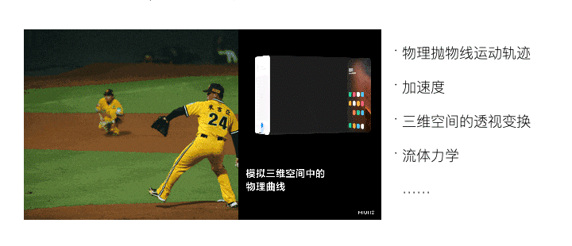

从简单易懂的角度来解释的话，我是这么去理解合情合理的，情就是「情景」、理就是「物理」；就是什么样的情景设计什么样的动效，以及在设计动效时需要符合我们所感知的这个物理世界, 也就是动效设计要符合当下情景、符合物理规律。
我总结了关于合情合理的三个关键词：克制、真实、顺滑
动效设计需要符合情景需要（不克制会分散用户注意力使我们希望吸引用户的东西被忽视或使用户想关注的东西被不断干扰）
• 设计是否：不要总想着这个可以动一下那个可以动一下，关于动效设计我的原则就是能不做就不做，就是说这个方案是否真的有做动效的必要，做了的话对产品有什么作用，需要先明确，是否真的需要动，能不动就尽量不要动。
• 动效时长：动效没有绝对的时长标准，不同情境下动效的时长需要也不同，过长的时长可能会分散用户的注意力，浪费用户时间；过短的话也有可能让用户察觉不到货感觉过于跳跃，时长不能过长或者过短。
• 展示时机：什么时候动什么时候不动，以及展示出现的频率，这些都对用户有影响
• 动效幅度：我们的移动设备屏幕有限，动效的幅度大小会直接影响到用户在使用时候的关注度，这个在做直播礼物动效的话就很明显，通常越贵的礼物屏占比也会越大，动效的运动幅度大小。
• 聚焦目标：动态的东西理论上肯定会比静态的东西要吸引人，用户的注意力有限，在方案设计时必须想清楚，到底需要用户更关注哪些东西，就像一段话每一句都加感叹号的话，反而会失去重点，是否带有明确的目的性。
关于克制，总结起来就三个字“吸引力”，如何设计，取决你希望这个东西对用户到底有多少吸引力。
我们生活在物理世界里面，动效需要符合物理规律，逻辑自洽，我们的动效反馈需要让用户感觉是可信的，与用户感知一致，而且页面的布局、空间结构关系需要像物理世界一样容易被接受和理解。就像近大远小之类的，被广泛接受的表现形式更贴近用户的感知，因此也更容易被理解。
人们也把这些习惯带到了虚拟的人机交互中。设计师应该尽可能多的设计可触发的事件和相对应的触发动画，创造一个所见即所得，并可以丰富探索性的UI世界，这是界面进 化的必然趋势之一。
帧数和帧速率，不能出现大幅度波动丢帧或者卡顿现象，动效的体验应该是流畅顺滑的。
• 视觉流畅、速度顺畅、过渡自然、元素关联。
• 与操作无关的动效变化只会迷惑用户，页面切换的过程如果有相同元素或想表达的东西是同一个的话应该尽量保持不变。
• 动效设计里的“突然出现或消失”就像现实世界的瞬间移动一样不合理。
用户操作一个东西，该动的地方动了，用户自然会产生联想，不该动的地方动了，用户可能就会被迷惑，我们需要明确用户在什么样的情境下触发了动效，不同情境下的动效会引起用户注意力的程度和情感不一样，对应我们需要提供的动效设计也不一样；关于一个东西设计的合理，广义上来讲就是符合用户感知的预期，不符合预期的动效设计，自然会让用户感觉不合理。
END